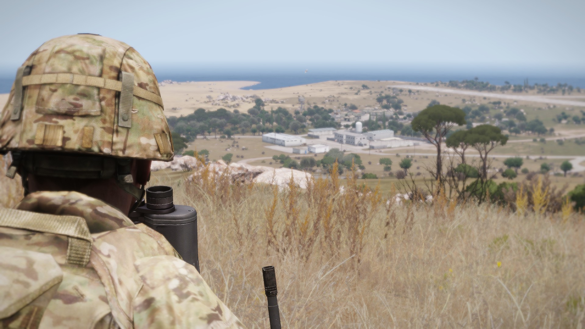
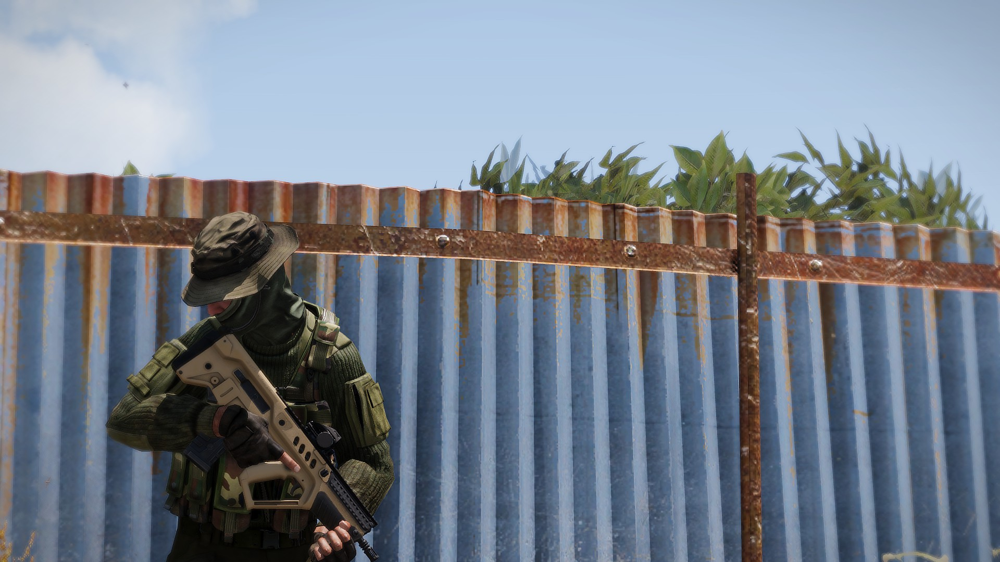

Blog
Hello! Welcome to the blog. To find a certain post I suggest you use the ctrl + F feature on your browser search the page!

Post #2 Whats going on?
LRO is just coming out of the idealogical stage. I am starting to do some research about using tents as ways to skip time. I possibly might just keep tents the same. I am just trying to add functinality with them becuase they can be under used.

Post #2 What is LRO?
LRO or Long Range Ops is an Arma mod that uses a specific modset and the tools of the Arma sandbox to emulate the being on the battlefield with all your stuff
it does it's best to simulate things like:
Pitching Tents
Carrying all your stuff
Making Fobs (Using 3cf Logistics)

Post #1 Hello World!
This is my first post. I will be documenting my gaming expierences and the development of my Arma Mod [LRO]
Check me out on Twitter! @EfytheAce